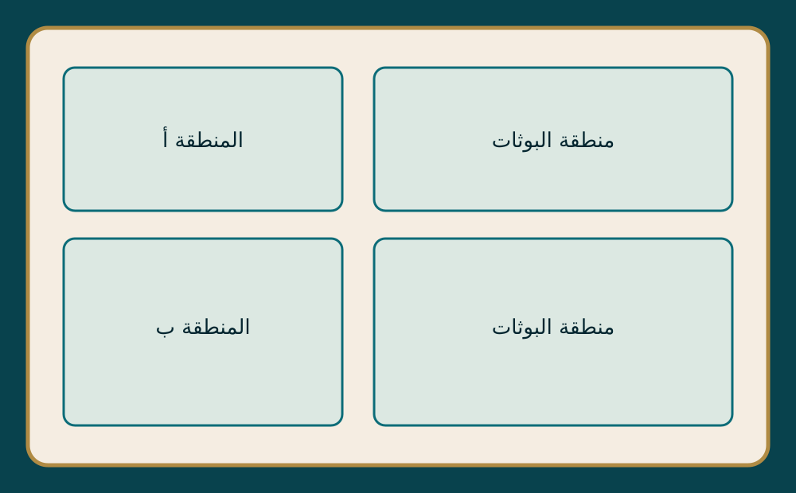

مرحبًا بك في فعاليتنامعًا نحو استخدام
معًا نحو استخدام
واعٍ للمضادات الحيوية
اكتشف أركان الفعالية، وتعرّف على موضوع كل بوث، واعرف مكانه بسهولة من خلال الخريطة التفاعلية.
استكشف خريطة الفعالية ←دليلك داخل الفعالية
٥ بوثاتخريطة البوثات
اضغط على علامة أي بوث لمعرفة تفاصيله وموقعه.

سيظهر هنا مخطط موقع الفعالية بعد رفع صورته من لوحة التحكم
● موقع بوثالخريطة التفاعلية
تحدّي داخل الجسم
لعبة تفاعليةرحلة المضاد الحيوي
ساعد كبسولة المضاد الحيوي على المرور بين خلايا الجسم وتجنّب العوائق. ترتفع صعوبة اللعبة تلقائيًا بعد كل ١٠ نقاط، مع عوائق أسرع ومسافات عبور أضيق.
النقاط ٠المستوى ١أفضل نتيجة ٠
تزداد الصعوبة كل ١٠ نقاط
اختبر معلوماتك
٥ أسئلة · ٥٠ نقطةتحدّي المعرفة
أجب عن الأسئلة الخمسة حول الاستخدام الصحيح للمضادات الحيوية. كل إجابة صحيحة تمنحك ١٠ نقاط تُضاف مباشرة إلى مجموعك.
المحتوى للتوعية العامة، ولا يغني عن استشارة الطبيب أو الصيدلي.
كل خطوة تستحق التقدير
نظام الإنجازاتإنجازاتي وشاراتي
احفظ اسمك لمتابعة نقاطك وأوسمتك. تُفتح الشارات تلقائيًا عند تحقيق شروطها في الألعاب والاختبارات.
♙
ملف المشاركاسم واحد لجميع أنشطتك
يُحفظ الاسم على هذا الجهاز لتسهيل تسجيل نتائجك.
٠إجمالي النقاط
٠مرات اللعب
٠الاختبارات
مجموعة الشاراتتُعرض المكتسبة والمقفلة
احفظ اسمك لعرض إنجازاتك.
تعرّف على الأركان
جميع البوثات
ما لقينا بوث بهذا الاسم.
معرفة اليوم، حماية للغد
استخدم المضادات الحيوية بمسؤولية، وبحسب إرشادات المختصين.